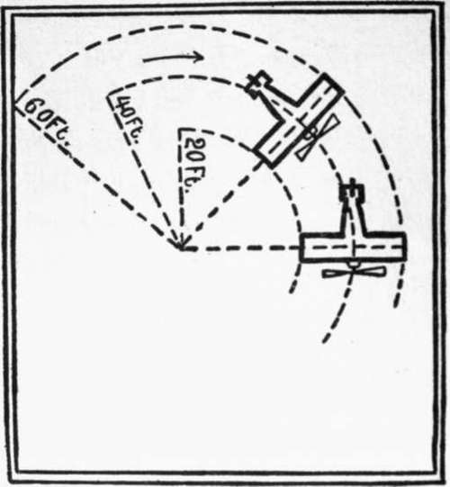

Chapter VI. Making A Turn
Description
This section is from the book "The New Art Of Flying", by Waldemar Kaempffert. Also available from Amazon: The New Art of Flying.
Chapter VI. Making A Turn
In straightaway flight an aeroplane is balanced to a certain extent by the main supporting surfaces (the large spread of which counteracts sudden inclination) and also by the position of the centre of gravity, which lies below the supporting surfaces in many machines. But when the vertical rudder is thrown over to swing the machine around, new forces come into play.
When a line of soldiers wheels around a street corner the man at the inner end of the line does little more than mark time; the man in the centre of the line marches along at a steady pace; while the man on the outside all but runs. In order that the line may be straight the movement must be progressively faster from the inner to the outer end. An aeroplane as it turns horizontally is in exactly the same predicament as a line of soldiers. The outer end of the machine must move faster than the inner end.
The accompanying illustration, Fig. 39, will make this clearer. Let us assume that the arc to be described is sixty feet in diameter, and that the aeroplane has a spread of forty feet. The outer end of the machine must describe its large arc of sixty feet radius while the inner end is describing its small arc of twenty feet radius. Evidently the outer end must travel considerably faster than the inner.
Fig. 39. An aeroplane of 40 feet spread of wing rounding an arc of 60 feet radius.
Since the outer side of the aeroplane must travel over a given distance in the same time that the inner side must travel a considerably-shorter distance, gravitation must be opposed to centrifugal force in order that the turn may be effected with safety.
As the speed of an aeroplane increases, its lifting power also increases. Hence the more rapidly moving outer end of an aeroplane will be subjected to a greater lifting effort than the slowly moving inner end, and hence the entire machine is canted at a more or less sharp angle on a turn. This natural canting or banking has its advantages. It counteracts the effects of centrifugal force, which are unavoidable in any rotary movement.
What centrifugal force means we see when a weight at the end of a cord is whirled around. If whirled fast enough, the weight will describe a circle, because the centrifugal force is very much greater than the force of gravitation. If the whirling be slackened below a certain critical point, the weight will drop back to the hand. A flying-machine is like the whirling stone. It has a very large centrifugal force as it turns. So great is that force that it must be checked by the force of gravitation, in other words, the weight of the machine. The more the machine is heeled over, the more marked will be the action of gravitation. Hence the natural canting of the machine on a curve is of advantage in counteracting the effect of centrifugal force.
If the canting be very pronounced, it is possible that gravitation may overcome the centrifugal force, so that the machine will slide down to the ground. To forestall that possibility the aviator may either sweep his circle on so long a radius that there will be but little canting, or he may employ wing-warping devices or ailerons to counterbalance the canting action. Since most aeroplanes are provided with either warping devices or ailerons, it is the usual practice to depend upon them in turning. The result is that we see skilful pilots swinging in an arc at a speed that cants their machines at an angle which may be more than seventy degrees to the horizontal and which almost causes the spectator's heart to stop beating, so perilous does the exploit seem to the eye.
The inquiring reader may ask: How does wing-warping or the manipulation of ailerons prevent the machine from slipping down? The principle involved is exactly the same as that which underlies the balancing of the machine in straightaway flight when it is subjected to capsizing gusts. As soon as the pilot wheels, he increases the angle of incidence on the inner end and hence the upward pressure, with the result that the tendency of the inner end of the machine to fall is checked. Simultaneously the angle of incidence of the outer side is decreased and the downward pressure increased, with the result that the tendency of the outer side to rise is checked.
All this sounds very easy; yet, even after a successful aeroplane had been invented, many machines were wrecked before the trick of making a turn was learned. It took the French two years to learn the art of turning. Indeed, a wealthy Parisian, named Armengaud, offered a prize to the first Frenchman who performed the feat. Henry Farman won that prize so recently as July 6, 1908. The Wright Brothers spent the whole flying season of 1904 in learning how to sweep a circle when the wind was blowing. Octave Chanute, the only engineer who was allowed to see them at work during that period of apprenticeship, gives this interesting account of their trials and tribulations:
" I witnessed a flight at Dayton on October 15, 1904, of 1,377 feet performed in twenty-four seconds. The start was made from level ground, and the machine swept over about one-quarter of a circle at a speed of thirty-nine miles an hour. The wind was blowing diagonally to the starting rail at about sixteen miles an hour.
" After the machine had progressed some five hundred feet and then risen about fifteen feet it began to cant over to the left and assumed an oblique transverse inclination of fifteen to twenty degrees. Had this occurred at an elevation of, say, one hundred feet above the ground, Orville Wright, who was in the machine on this occasion, could have recovered an even balance even with the rather imperfect arrangement for control at that time employed. But he felt himself unable to do so at the height then occupied and concluded to come down.
" This was done while still turning to the left, so that the machine was going with the wind instead of against it, as practiced where possible.
" The landing was made at a speed of forty-five to fifty miles an hour, one wing striking the ground in advance of the other, and a breakage occurred, which required one week for repairs. The operator was in no wise hurt.
" This was flight No. 71 of the 1904 series. On the preceding day the brothers had made alternately three circular flights, one of 4,001 feet, one of 4,902 feet, and one of 4,936 feet, the last covering rather more than a full circle".
A steady wind is imperceptible to the man in a flying-machine, and turning is effected as easily with as against the wind. When the wind is unsteady not only is balancing difficult but turning also, since the machine must be simultaneously balanced and turned. The two operations are more or less confused. When the wind is very gusty the pilot may find it harder to turn and travel with the wind instead of against it.
A sharp turn on an aeroplane is like one of those moments on a yacht when you slack away quickly on the main sheet and prepare for the boom to jibe. There is none of the yacht's hesitancy, however; for the machine slides away on the new slant without a quiver. An inexperienced passenger on an aeroplane is tempted to right the machine, as it swings around and tilts its wings, by throwing over his body toward the descending side. In a canoe or on a bicycle it would be natural to use the body. In an aeroplane the movement is unnecessary because the machine does its own banking.
In the Curtiss and Santos-Dumont machines any such instinctive movement on the part of the aviator to right the careening machine actuates the ailerons or wing-warping devices in the proper way. In the Curtiss biplane, as we have seen, the seat-back is pivoted and is connected by cables with the ailerons. Hence, should the pilot involuntarily throw his weight over to right the machine, the ailerons are tilted to regulate the pressure on the planes in the proper manner.
The effect of the vertical rudder in turning varies with the speed of the aeroplane relatively to the speed of the wind. The higher the speed of the aeroplane the more marked is the influence of the vertical rudder on its course.
The form that the vertical rudder assumes is various. In monoplanes it consists of a single vertical surface, mounted at the rear of, the machine: in biplanes it usually consists of a pair of parallel vertical surfaces, as in the Wright machine. Occasionally these parallel vertical surfaces form the sides of a box, as in the Voisin and Farman machines, the top and bottom of the box serving as horizontal stabilising surfaces, as in the old cellular Voisin biplane.
Continue to: